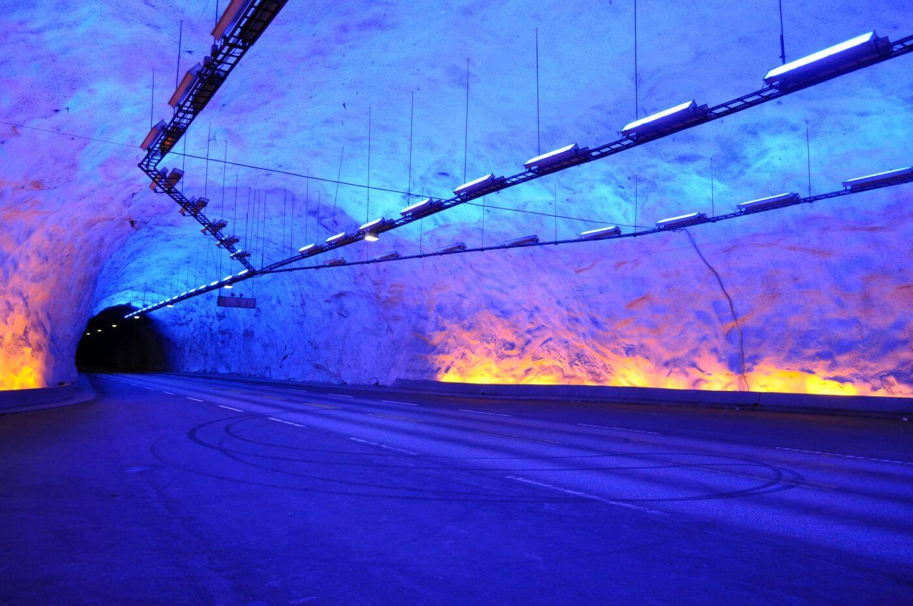

Podstawowe informacje
- Długość: 24,51 km
- Rok otwarcia: 2000
- Rodzaj: tunel drogowy
Lærdal Tunnel to najdłuższy tunel drogowy świata. Łączy miejscowości Lærdal i Aurland w Norwegii, zapewniając całoroczne połączenie między Oslo a Bergen. Tunel ma 24,51 km długości i został otwarty w roku 2000.
Aby ułatwić kierowcom koncentrację i zapobiec zmęczeniu, wewnątrz tunelu znajdują się trzy specjalne „komory odpoczynku” oświetlone niebieskim i żółtym światłem, co tworzy niesamowity efekt wizualny.
Porównanie długości tuneli
| Tunel | Kraj | Długość (km) | Rok | Rodzaj |
|---|---|---|---|---|
| Gotthard | Szwajcaria | 57,1 | 2016 | Kolejowy |
| Seikan | Japonia | 53,85 | 1988 | Kolejowy |
| Channel | UK–Francja | 50,45 | 1994 | Kolejowy |
| Lærdal | Norwegia | 24,51 | 2000 | Drogowy |